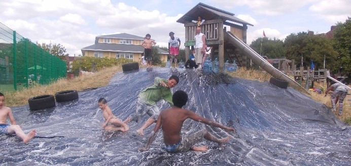
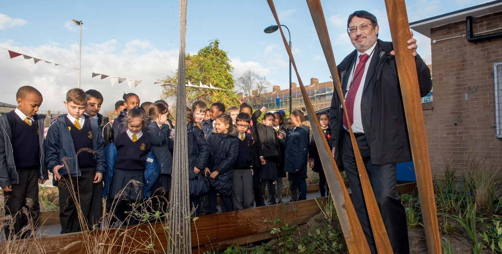
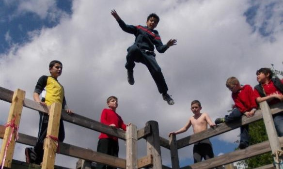

How the redevelopment will have a severe impact on our children and our health.
This proposal would have impacts that the council has not discussed with residents.
We would all suffer during the demolition and construction if we allow this to proceed. Those that would suffer most from this proposal will be our children. A concern that the council has ignored throughout their “consultation” is the negative impact of 4 years of redevelopment on children living on the estate and those attending both Randolph Beresford and Saint John children's provisions. Look through the council publicity in their newsletters or website and you will not find an analysis of the harms that we and our children would experience. They simply don't discuss it.
Probably of greatest concern will be the impacts on air quality and persistent noise pollution. It is critical to understand that the demolition/construction site is in the heart of one of the most densely populated wards in the UK. It is bounded by hundreds of homes on two sides and by two under 11's children's provisions on the other two. There is no open side through which pollutants can be directed. The noise will rebound within the estate. It is understood that all building work has some impact on the health and well-being of those nearby. But the council decided to proceed with a four year redevelopment in this location without any consideration for those who will be subject to these harms and particularly our children. A smaller plan could possibly be carried out without significant harm but not this proposal.
Bizarrely, LBHF Council also intends to demolish Randolph Beresford Early Years Centre and then move it to help with their land grab. In February this year OFSTED carried out an inspection and concluded that “Randolph Beresford Early Years Centre continues to be an outstanding school.” Anyone who lives in White City Estate will know what a fantastic children's provision, both the main site and the annex, has been for many years. Yet the council tries to tell us that demolishing and rebuilding it is an improvement. They even tell us we told them we want them to do it. But we didn't.
It was the Head Teacher at Randolph Beresford who initiated the changes to Bridget Joyce Square to enhance the experience of the children on the estate and their parents. The square too will be mostly lost to vehicle access and new buildings. This is what the council calls “Re-imagining the square”. It is definitely NOT what was in the imagination of the White City Estate community. Watch “Gardner's World” from 24 minutes to be reminded why Bridget Joyce Square should NOT be re-developed.
Watch on BBCChildren have already begun to pay the price. Because the council decided a long time ago that they will proceed with this development, they have spent the last few years running down the children's provisions on the estate. In 2014 the White City Adventure Playground won the Adventure Playground of the Year award . The judges concluded that “White City is one of the newer adventure playgrounds in London, having evolved over recent years from a more standard childcare facility to the fully-fledged, award-winning adventure playground that it is today”. Last year LBHF council stripped out the equipment because it “needed maintenance”. No consultation with the community, no attempt to repair or improve, no concern for the children affected. The Council has now included a belated plan to confine children's play to three small play areas at Mackay, Mackenzie and Havelock during the 4-year redevelopment. This would not be enough. These areas are completely unsuitable to accommodate all the children and parents who currently use the open spaces in the middle of the estate. The New London Plan says there must be 10 sq meters of space per child on an estate.
